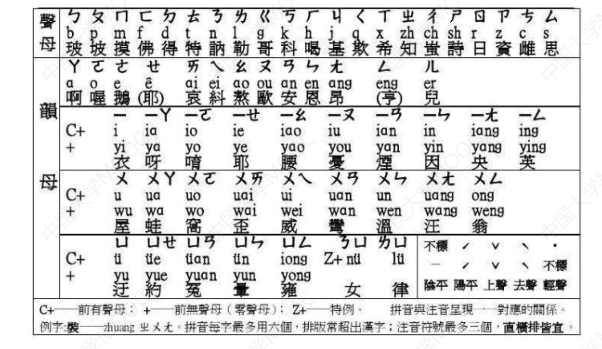
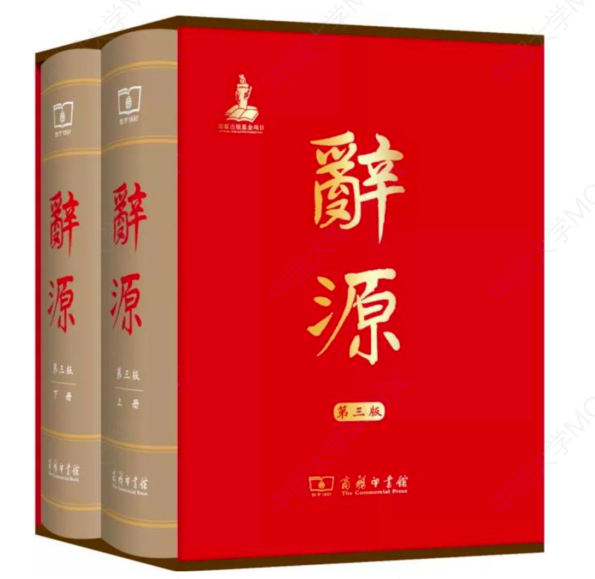

1.2 第一单元通论（一）怎样查字典辞书
学习古代汉语，免不了碰到一些自己不懂的字词典故，这些都需要依靠查阅工具书来解决。
你知道中国第一部以《字典》命名的工具书吗?
你知道是哪部字典入选吉尼斯世界纪录，被评为世界上“最受欢迎的字典”和“最畅销的书”?
今天我们就来说一说跟古代汉语密切相关的字典和辞书。
不同的工具书有不同的特点和用途，要比较有效地查阅，必须了解不同工具书的性质体例，编排方法和注音释义特点等。
我们先介绍一般工具书的编排法、注音方法和释义特点。再对十几本常用字典辞书进行简单介绍。
一、汉语字典辞书编排的方式
1. 音序排列法
现在通行的是汉语拼音字母次序排列。在汉语拼音方案公布之前的几十年内，有按照注音字母排列的。如杨树达《词诠》。在古代，大多是按平水韵106韵排列。如阮元主编的《经籍籑诂》。
缺点:查字方便，但不明字音或读音不准时，就难以找到要查找的字。
注音字母:中国第一套法定的汉字形式的标注汉字的拼音字母。又称国音字母、注音符号、注音字符。大概在辛亥革命前后制定的。
注音字母与汉语拼音字母对照表:

2. 部首和笔画排列法
把同一部首的字归在一起，部首的先后以笔画的多少为序。同一部首的，笔画少的在前，笔画多的在后。
缺点:字归属哪一部，多少画，不容易确定。
3. 号码编码排列法
把汉字按照一定的原则，编出号码，通行的是四角号码检字法。
缺点:字角的归类要靠死记，如不常用，容易忘记。
二、汉语字典辞书注音方法
-
注音字母和拼音字母注音
在中国古代没有音标，也没有拼音字母，就只能选取汉字来作为注音工具。在这种情况下产生了像直音法、读若法、反切法等早期的注音方法。
-
早期的注音方法
(一)直音法
直音就是直接用同音字注音，如:“篙”，音“高”。
优点:直接简便。
缺点:有些字没有同音字或者同音字很生僻。
(二)反切法
反切就是用两个汉字拼注一个汉字读音的注音方法。其方法是:反切上字与被切字声母相同，下字与被切字韵母、声调相同。如:“呼报反”，即用“呼”的声母h和“报”的韵母ao声调相拼，是“号”或“爱好”的“好”。
缺点:用汉字给汉字进行注音，同一个汉字不同的年代发音不同，有些反切按照后来乃至现代人的读音进行拼读，可能就切不出那个字的正确读音，
(三)读若法
读若就是读音像，找一个读音相近字来注音。如琎，读若津。
缺点:是注音最初的形式，只能取近似读音不能精确为汉字注音。
三、常用字典辞书及其使用方法
(按照出版时间顺序排列)
1.《说文解字》
《说文解字》是中国文字学的奠基之作，我国第一部系统完备的字典。在之前也有像《急就篇》这样的字典，但属于简易的字典。《说文解字》分析篆文形体和本义，是我国第一部讲解文字原始形体结构及渊源的古文字学专著，用通俗的话说，就是中国第一部真正意义上的字典。
《说文解字》是东汉学者许慎编撰的，这位许老先生是汝南召陵人，是一个高寿者活了整整九十岁。从史料上看，许慎是一个才华出众、品德高尚的人，师从经学大师贾逵钻研古文经，许慎的学问与当时的社会环境以及师承有自分不开，学业更加精湛，很快便以“性淳笃，博学经籍”(质朴笃厚)之名名动京师，被誉为“五经无双许叔重(许慎字叔重)”。对《五经》的认识在世上找不出第二个人能与之相比的了。
东汉时期的学术界分为古文经学派与今文经学派，两派争论十分激烈。今文经学派认为经书是圣人之言，字字句句背后都有微言大义;而古文经学派认为应重视语言文字学，要根据字的意思来解释经书。许慎属于古文经学派，他认为先有文字而后才有五经，要理解五经就离不开文字。当时已有很多学人不了解文字的最初起源，如何让人们从根本上认识文字呢?许慎决定写一部介绍文字来历的辞书，对常用汉字的源流进行一番梳理，他将这部书定名为《说文解字》。
为了编撰这部《说文解字》，许慎费尽了心思，从公元100年到公元121年，经过二十多年的推敲、修改和增删，直到准确无误后才让儿子将其献给朝廷。《说文解字》用小篆作为字头，隶书作为正文进行注解。
《说文解字》是以小篆和隶书编撰而成的，以小篆做字头，隶书做注解。我们都知道，小篆盛行于秦代，东汉时期早已使用隶书，许慎为什么要用小篆编著辞书呢?
有以下几个原因:
一是因为小篆字体是当时唯一一种被规范过的文字。秦灭六国后实行中央集权制，为了便于交流沟通而实施“书同文”的政策，第一次把汉字字形进行了规范和统一;
二是因为小篆字体在汉字发展过程中处于承上启下的位置;
三是许慎编撰《说文解字》的初衷是为了解读儒家思想，而当时的儒家经典多是用古文字大篆和小篆编成的。
鉴于这些原因，许慎用古文字编著《说文解字》也就是顺理成章的事了。
(一)《说文解字》的体例
简称《说文》，东汉许慎著。是我国现存最早的字典。全书分汉字为540部，开创了以部首统率汉字的字典编纂法，收字字头以小篆为主(正文注解用隶书)。收字9353个，另有重文1163个。
这里补充《说文解字》的特点:中国文字学的奠基之作，我国第一部系统完备的字典(之前有《急就篇》等简易字典)。释篆文形体，只说解他认为的本义;首创部首编排法，把9353个字归入540个部首。
该书的体例为:先列小篆形体，然后进行说解。说解方式是先释字义，后分析汉字的形体结构。如“天”字先列篆体，再解释字义是“颠也，至高无上”，然后分析它的形体结构为“从一大”。(按:许慎未看到“天”的甲骨文金文，其释义和分析形体结构都是错的。“天”在金文中，是一个指事字，本义为人头，后代神话故事中“刑天”的意思即砍了头的人)。
(二)《说文解字》的价值
- 确定了“六书”理论;
- 按照“六书”原则，创立了汉字部首，制定了按部首编排字书的体例;
- 保留了小篆，便于从字形说明本义，并为释读甲骨文、金文提供了依据;
- 保留了先秦词义和汉代训诂资料;
- 保留了古音资料;
- 记载了丰富的古代文化资料。
(三)“说文四大家”
一直以来对《说文解字》有很多人进行研究，到了清代有四家特别著名，即“说文四大家”(清代研究《说文解字》的四大家):段玉裁《说文解字注》，桂馥《说文解字义证》，王筠《说文句读》，朱骏声《说文通训定声》。
2.《康熙字典》
《康熙字典》是中国第一部以字典命名的汉字辞书。也是唯一一部能与《说文解字》相提并论的字典。
1710年，此时的康熙皇帝早已平定天下，傲视四方，但全国的读书人却还用着先朝的字典，于是便命张玉书和陈廷敬等人以明《字汇》和《正字通》为蓝本编一部大字典。字典的编纂工作本来以张玉书为主，陈廷敬辅助，但不久张玉书病逝，陈廷敬于是继任总修官。
陈廷敬是顺治十五年(1658年)进士，原名陈敬，因同科进士中有同名者，所以顺治皇帝便给他加了一个“廷”字，从此改名陈廷敬。陈廷敬先后担任康熙帝师、吏部尚书和文渊阁大学士等职，是康熙年间的名臣。为了尽快完成《康熙字典》的编撰任务，陈廷敬付出了很大心血，不仅亲自审阅文稿、编订目录、考校典籍，还不忘招纳天下贤士共同参与，据说他的儿子陈仕履就是在“出榜招贤”的时候被聘为《康熙字典》编修的，父子共同为国家编纂字典，也算是中国辞书史上的一段佳话。
《康熙字典》历时六年而成，全书共收录汉字47035个，是中国收录汉字最多的古代字典。《康熙字典》以古代诗文溯其字源，又以各代用法佐证文字的变迁，自成书以来经久不衰，影响深远。而且标有反切注音、出处以及参考文献等。在每个义项之下都列有古注。
(一)《康熙字典》的优点:
对字的注音和释义主要是应用前人的意见，还引用古注。
(二)《康熙字典》的缺点:
《康熙字典》也存在着一些显而易见的错误和不妥之处。
1.全书的反切和训释罗列现象，漫无标准，作者很少提出自己的见解，不利于初学者使用;2.疏漏和错误多。
几十年后，江西一名名为王锡侯的儒生利用十七年的时间编撰了一部《字贯》，将《康熙字典》作了一番全面的修订。但这部《字贯》却因没有避讳康熙、乾隆的名字而遭到朝廷封杀，王锡侯被满门抄斩，就连看过《字贯》的人也遭牵连，纯粹的学术研究最后演变成一场骇人听闻的文字狱，其中的曲曲折折令人深思。
关于《康熙字典》的名字，根据康熙皇帝的意思，这部辞书编纂之初即定名为《字典》，这在《清史稿》及御制《康熙字典序》中都有记载。后来的“康熙”二字很可能是在流传过程中逐步加上的褒扬性、区别性文字，直到道光七年重刻后，《康熙字典》的名字才被正式固定下来。
(三)《康熙字典》的体例
该书的体例是先音后义。在到了每个形体之后(有些词有几个形体，即异体字)首先是注音，注音用的是反切法，该书罗列了比较重要、韵书对该字的反切音。
如“社”字(教材P70):首先引《唐韵》《集韵》《韵会》《正韵》的注音，说是“并常者切”。接着释义，一个字有几个义的就逐个解释(但不像现在那样分123义项，本义引申义杂陈)。“社”第一个义是“土地神主”，这是本义，后面引《礼记·祭义》为证。
3.《经籍籑诂》
主编:清代阮元。出版时间:编于1798年。
编排方式:按平水韵106韵排列。
性质:专门收集唐代以前各种古书的注释。(每个字罗列了唐代以前各种古书注解对这个字的解释。)
4.《经传释词》
作者:王引之。出版时间:编于1819年。
编排方式:古声母36字母
性质:古代汉语虚词用法专著，解释虚词160个。
特点:古代汉语虚词的特殊用法引证丰富。
5.《中华大字典》
主编:陆费逵、欧阳溥存
出版:中华书局1915年
编排方式:部首排列法
注音方式:采用反切法、直音法
特点:继《康熙字典》之后第二部大型字典，共收字48000多字。对《康熙字典》的错误有一所更正，但是后出未必能专精。
6.《辞源》
出版:1915年。(1958年修订)商务印书馆出版。(补充知识，了解即可:何九盈、王宁、董琨三位当代语言学界专家共同担任主编，《辞源》再次修订完成，第三版于2015年正式出版。王宁:“《辞源》是以词语形式储存古代典籍中传统文化的知识库，也是中国式的、阅读古代传世文献的现代辞书。”)

编排法:按部首排列法。旧版沿用214部，修订版改为208部。
释字体例:先解释单字字义，后解释复音词或词组的意义和用法。
特点:是专门为阅读古籍和古代文史研究使用的工具书。第一次提出“辞书”这个概念。首创兼有字典和词典双重功能的现代辞书模式。
7.《词诠》
作者:杨树达
出版:商务印书馆1928年出版，中华书局1954年重印
性质:虚词词典。
编排方式:按照注音字母顺序排列。(视频误为“按平水韵顺序”，特此更正)
特点:既有虚词的通常用法，也有其特殊用法。
8.《辞海》(要跟《辞源》相对比)
出版:中华书局1936年出版，(1958年修订)。
编排方式:部首排列法。旧版沿用214部，修订版改为250部(视频有误，特此更正)
释字体例:先释单字字义，后解释复音词或词组的意义和用法(先说明词义或用法，再引用书证或综述引文大意)。
特点:新版《辞海》取“海纳百川”之意，是以词语为主，兼及百科常识，是一部综合性辞书。
注意:新版《辞源》《辞海》的对比
1949年后，原来的两部字典内容相对陈旧，1958年前后两个出版社相继对两部辞书进行了整理，修订后的《辞源》成为一部专业的古籍阅读工具书和古典文史参考书。修订后的《辞海》则定为综合性的辞书。
9.《诗词曲语辞汇释》
作者:张相
出版:中华书局1953年
释字体例:一般解释单词或词组的意义，有时还由意义的解释推及词源(或语源)的探讨和语法的分析。
特点:汇集了唐宋元明流行于诗词曲中的特殊语词。
10.《新华字典》与《现代汉语词典》
(一)《新华字典》
故事:2016年4月12日晚上8点，《新华字典》入选吉尼斯世界纪录，被评为世界上“最受欢迎的字典”和“最畅销的书”。据当时统计《新华字典》全球发行量共达5.67亿本。
出版:出版于1953年。
特点:《新华字典》是新中国第一部面向大众的白话语文工具书，完全用白话解释字词并建立义项之间的联系。适当收录了古代文献中的词汇，以及历史上的外来语。(对古代汉语学习者有帮助)
主编:国学大师魏建功担任主编，后来被人称为“《新华字典》之父”。
最新版本:第11版《新华字典》在具体的修订中，主要涉及增补字音，增补新义，增删新兴的网络热词、部分与国计民生相关的词语，增补人名、地名和姓氏用字，删去部分使用频率较低的词语;更新附录及改动体例。收录了一些第10版推出之后新兴的网络热词，增加了部分与国计民生相关的词语。另外，还增加繁体字1500多个，异体字500多个。
(二)《现代汉语词典》
故事:1956年2月6日，国务院在关于推广普通话的指示中，责成中国科学院语言研究所(即今中国社会科学院语言研究所)编写以确定词汇规范为目的的中型现代汉语词典。编辑时遇到的最大难题是，没有任何同类词典可以参考，一切从零开始。1965年，试用本出版。但接下去的10年“文化大革命”成为《现代汉语词典》的噩梦。
特点:《现代汉语词典》“是以记录普通话语汇为主的中型现代语文词典”。它的出版填补了我国规范性语文词典的空白。《现代汉语词典》总结了20世纪以来中国白话文运动的成果，第一次以词典的形式结束了汉语长期以来书面语和口语分离的局面，第一次对现代汉语进行了全面规范。《现代汉语词典》收了一些旧词语、旧词义和书面上还常见的文言词语。释义比较精确，有助于通过现代的精确释义理解古义。(对古代汉语学习者有帮助)
出版:1978年(根据《现代汉语词典》当为“1978年”，教材认为是“1979年”有出入)《现代汉语词典》第一版出版。2016年9月商务印书馆出版《现代汉语词典》(第7版)
11.《古代汉语常用字字典》
主要编写者:王力等主编
出版:商务印书馆1979年出版，目前出了第4版。第4版也对前几版机型了增补修订。
特点:由于编写者是著名的语言学家，又都是优秀的古代汉语教学一线教师，字典编排十分符合古代汉语学习者的需求，审音释义权威，例句精当，难懂的例句附有解释和串讲，另外还附有注意、辨析等，对疑难的字词加以提示辨析。是学习古代汉语的入门书，也是必备的工具书。
12.《汉语大字典》《汉语大词典》
(一)《汉语大字典》
主编:徐中舒
出版:国家组织编写，四川辞书出版社、湖北辞书出版社，1986-1990年出版。
编排法:部首排列法，200部。
性质:收集古今汉字的大型语文工具书，收单字56000多字。(是目前我国收集汉字仅次于《中华字海》的字典)
特点:注重收集古今汉字，历史地反映汉字形体的演变关系。
释字体例:单字条目下，列有反映汉字形体演变的甲骨文、金文、小篆、隶书等等，它的注音不仅有现代注音，还有反切和上古音。
(二)《汉语大词典》
主编:罗竹风
出版:上海辞书出版社(第一卷)，汉语大词典出版社(第二——十二卷) 1986-1993年出版
编排法:部首排列法，200部。(收词37万条)
释字体例:先解释单字字义，后释复音词或词组的意义和用法。先说明词义或用法，再引书证或综述引文大意。
特点:是一部大型的历史性的详解语文词典，试图从词语的历史演变过程加以阐释，古今兼收、源流并重。首先是迄今汉语语文辞书中搜罗最为宏富的一部大型语文词典，其次引例丰富，是在收集了大量一手资料的编撰而成的，保证了收词立目、释义、探源等方面超越前人。
四、使用字典或辞书时注意
1.看序和出版年月;2.细读凡例;3.注意书后有没有勘误、附录之类的东西。